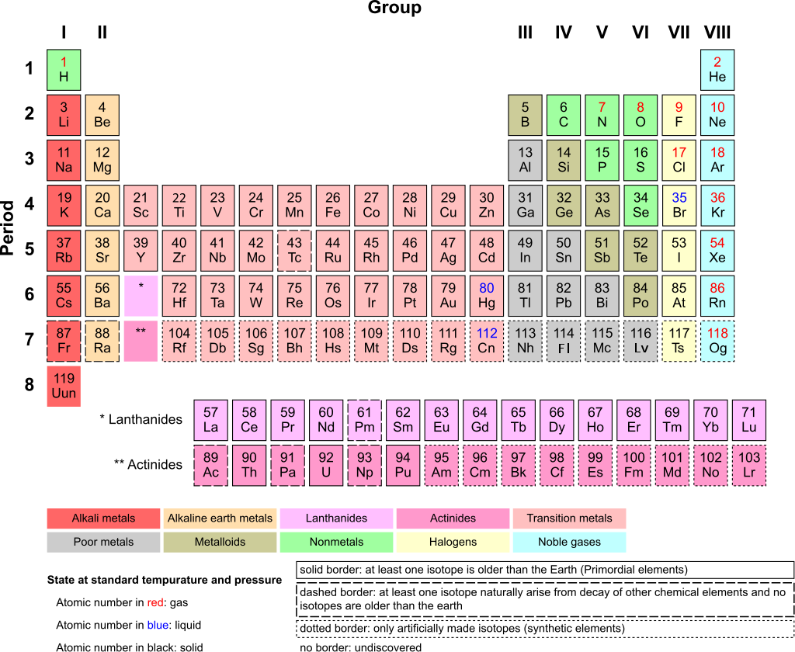

On this next page of my website I will be showcasing a project I have done in Science class. This project was about the U.S. debt and made us think of a solution to solve our debt. The page also indicates which IB Learner Profile we used during the project. The next part of my page will further explain what the REE Project was and why we did it.
The REE project had us claim what element of the Periodic Table is the best to mine to cure the U.S. debt. We had to create a letter that we would “send” to the U.S. government to show them that we should muine Rare Earth Elements to cure our debt. The REE Project consisted of three different classes combined into one project. The three classes were all magnet and were Science, Computer Science, and Math class. We got graded in all three subjects by different criteria marks. The Science component was based on all the data we gathered in order to claim which element is the best to mine to solve our debt in the U.S. The Math component was based on the numerical part of the data that we gathered, like the cost of mining the Rare Earth Element or the amount of that element on Earth. Lastly, the Computer Science component consisted of our formatting in our letter , like our Border and our Table of Contents. I have realized that this project took a lot of time and hard work to complete and beautify.
The most important IB Learner Profile in the REE Project was Reflective. I chose this IB Learner Profile because it was very commonly used during the project. During the project I had to reflect upon the element I chose and see if it truly is the best Rare Earth Element. I realized that my first Rare Earth Element that I chose which was Terbium, costed way too much and I knew that a country like China wouldn’t buy it for an expensive price. So I reflected upon that information and changed the chosen element to Neodymium since it is affordable and commonly found on Earth, specifically the United States of America. The IB Learner Profile, Reflective, would be very useful in everyday life because this IB Learner Profile allows me to know what I did wrong and be able to notice that and change that the next time efficiently. This is useful in jobs that require a lot of coding where you have to notice the code’s problem and know how to change it. Many other IB Learner Profiles would have worked for this long and difficult project but in my opinion the most important IB Learner Profile was Reflective.
By Armtuk - Own work, CC BY-SA 3.0, Link